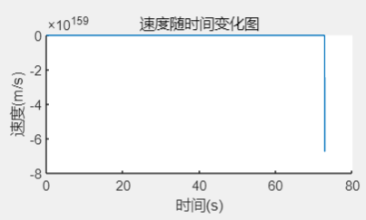
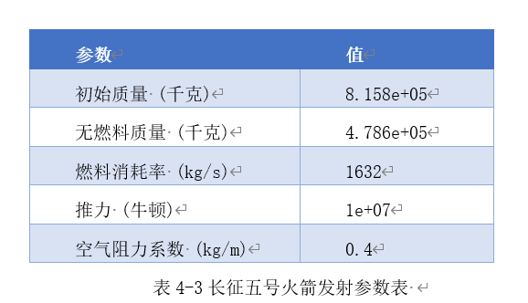
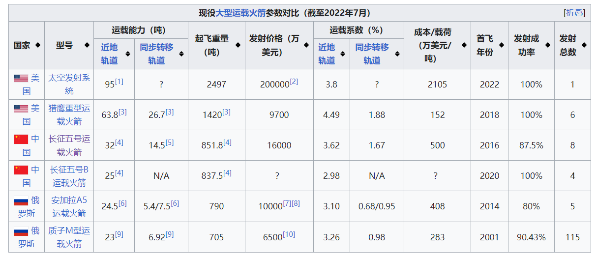

使用过程中的Q&A
图表显示不正常?

如果图表显示出现上图的异常，说明您的“结束计时时间”设置得太高啦！由于UI的显示高度受限，无法打印出完整图表。
解决方案：强烈建议您将“结束计时时间”设置到和下图结果指标一致的数值，即可查看完整的上升过程指标变化图。Try it again!
很抱歉由于时间原因，本求解器暂时无法正确显示火箭下坠过程参数，作者后期会努力继续优化的！😊
Download Installer
不知道输什么参数？
初始界面已经按照题目条件，设定了一组参数，想要尝试更多，以下提供一些参考
论文中给出的长征五号发射参数（假设为单级火箭）：

现役大型运载火箭参数对比（来自维基百科）：

没有MATLAB？
欢迎点击下方链接，在线体验作者搭建的课设专属WEBAPP！
在线体验!
将浏览器设置为电脑UI，即可在任何设备上实现访问！
(网站使用内网穿透技术搭建，因没有合适的服务器，目前只在作者的PC端部署，出于安全因素考虑，大部分时间将处于关闭状态。如需体验，请联系作者开网）